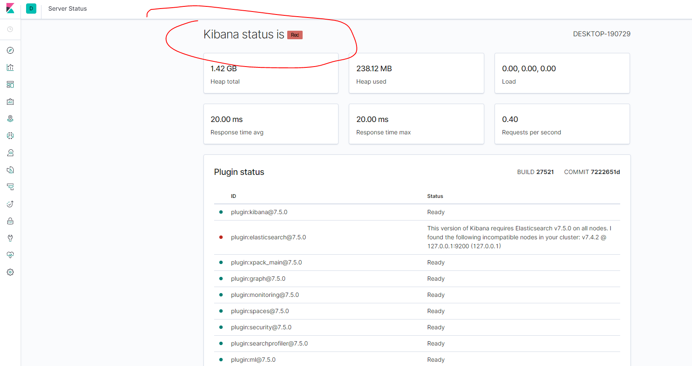

Elastic Stack介绍 Elastic Stack是一个统称ELK为核心的技术栈。
“ELK”是三个开源项目的首字母缩写：Elasticsearch、Logstash 和 Kibana。
Elasticsearch 是一个搜索和分析引擎。
Logstash 是一个服务器端的数据处理管道，可以同时从多个源获取数。
ibana提供了数据可视化。
下面是Elastic Stack的组成部分：
核心是ElasticSearch，它提供了数据的存储、搜索和分析。
Kibana提供了数据可视化，和管理Elastic Search。
Beats、Logstash提供了数据摄取的功能。
Beats是一个轻量级别的数据摄取工具。
Logstash提供了类似于ELT的功能。
下载 而ElasticSearch作为Elastic Stack的核心，下面来介绍如何安装和使用ElasticSearch。
ElasticSearch ElasticSearch链接 ，根据对应系统选择下载并安装！
下面我以window为例子，进行安装。
下载安装包后解压，打开bin目录。
运行bin\elasticsearch.bat文件
访问http://localhost:9200
Kibana ElasticSearch链接 ，根据对应系统选择下载并安装！
下面我以window为例子，进行安装。
下载安装包后解压，打开conf目录。
修改elasticsearch.hosts属性，如实填写其值
首先保证elasticSearch已经在启动
运行bin/kibana.bat
访问http://localhost:5601
界面如下，它的简况状态为red：

我们从他的日志中获取到原因：
两者版本不同，我们需要安装一致的版本;
当我更换版本再次启动的时候，log日志提醒我：
1 log [01:59:01.769] [warning][migrations] Another Kibana instance appears to be migrating the index. Waiting for that migration to complete. If no other Kibana instance is attempting migrations, you can get past this message by deleting index .kibana_task_manager_1 and restarting Kibana.
此时，我只能手动删除索引：.kibana_task_manager_1。如图所示：
重启kibana后，正常的界面如下：
Kibana 我们通过Kibana的插件开发工具来访问ElasticSearch，在windows中直接操作ElasticSearch太不方便，连删除索引都得通过postman，现在我们使用Kibana中的开发工具。
开发工具是通过json文档的形式来操作ElasticSearch的。
下面我们通过开发工具来对ElasticSearch进行增删查改。
首先我们熟悉一下ElasticSearch的各个术语：
相比于关系型数据库而言：
ElasticSearch的索引相当于数据库的表
ElasticSearch的文档相当于数据库表的每条记录
ElasticSearch的mapping相当于表结构，也就是索引的结构
操作索引 创建索引 首先介绍一下索引分片：
索引分片就是把索引数据切分成多个小的索引块，这些小的索引块能够分发到同一个集群中的不同节点。在检索时，检索的结果是该索引每个分片上检索结果的总和。默认情况下（7版本前），ElasticSearch会为每个索引创建5个主分片，就算是单结点集群亦是如此。
一、创建分片为1的索引
在7.x版本，索引的默认分片就是为1，但是在其他版本是5个
PUT 索引名
1 2 3 4 PUT my_index { "setting" :{"number_of_shards" :1 } }
二、其他
还有其他的方法，是给索引添加数据时，如果索引没有则会创建索引，这部分在新增数据
查询索引 一、查询索引内单个文档
索引内的每条记录就相当于一个文档。
语法：GET 索引/_doc/id
二、查询索引本身
语法：GET 索引/_search
删除索引 语法：DELETE 索引
1 2 3 { "acknowledged" : true }
出现以上，证明删除成功
索引的结构-mapping mapping又分为dynamic mapping和mapping。
当你创建索引，没有声明mapping时，会自动给这个索引建立一个dynamic mapping，但这个mapping不一定是你想要的，有时你插入的坐标数据他不能识别为geo_point，而是text。
所以，一般创建索引后，需要手动设置其的结构。
下面演示一个例子：
首先，创建一个分片为1的索引
1 2 3 4 PUT my_index { "setting" :{"number_of_shards" :1 } }
手动设置mapping
1 2 3 4 5 6 7 8 9 10 11 12 13 14 15 16 17 18 19 20 21 22 23 24 25 26 27 28 29 30 31 32 33 34 35 36 37 PUT my_index/_mapping { "properties" : { "address" : { "type" : "text" , "fields" : { "keyword" : { "type" : "keyword" , "ignore_above" : 256 } } }, "age" : { "type" : "long" }, "city" : { "type" : "keyword" }, "country" : { "type" : "keyword" }, "location" : { "type" : "geo_point" }, "province" : { "type" : "keyword" }, "user" : { "type" : "text" , "fields" : { "keyword" : { "type" : "keyword" , "ignore_above" : 256 } } } } }
查看索引的mapping：
索引数据的操作 添加数据 应上面创建索引 一节，下面的添加数据到索引，如果索引不存在的话，会自动创建。
添加单个文档 语法为：POST 索引/type/id {}
1 2 3 4 5 6 7 8 POST my_index/_doc/3 { "user" : "zx1j" , "uid" : 11 , "city" : "beijing" , "province" : "Beijing" , "country" : "China" }
注意：ElasticSearch在6版本以前一个索引是可以有多个type的，但是7版本只能有一个，8版本会完全删除掉type。
当my_index有type为type1时，创建成功会给你提示，意思是不推荐你使用type，要用_doc或者_create来代替。
1 #! Deprecation: [types removal] Specifying types in document index requests is deprecated, use the typeless endpoints instead (/{index}/_doc/{id}, /{index}/_doc, or /{index}/_create/{id}).
当你已经有type1时，创建POST my_index/type2/3，会出现错误
所以，还是推荐你使用 POST 索引/_doc/id来创建索引。
批量添加 1 2 3 4 5 6 7 8 9 POST _bulk {"index" : {"_index" :"my_index" }} {"user" :"zxj1" ,"message" :"message1" , "uid" :2 ,"age" :20 ,"city" :"北京" ,"province" :"北京" ,"country" :"中国北京市海淀区" ,"address" :"中国北京市海淀区" ,"location" :{"lat" :"39.970718" ,"lon" :"116.325747" }} {"index" : {"_index" :"my_index" }} {"user" :"zxj2" ,"message" :"message2" ,"uid" :3 ,"age" :20 ,"city" :"上海" ,"province" :"上海" ,"country" :"中国" ,"address" :"中国上海市xx" ,"location" :{"lat" :"39.970718" ,"lon" :"116.325747" }} {"index" : {"_index" :"my_index" }} {"user" :"zxj3" ,"message" :"message3" ,"uid" :3 ,"age" :20 ,"city" :"济南" ,"province" :"济南" ,"country" :"中国" ,"address" :"中国济南市天桥区" ,"location" :{"lat" :"39.970718" ,"lon" :"116.325747" }} {"index" : {"_index" :"my_index" }} {"user" :"zxj4" ,"message" :"message4" ,"uid" :2 ,"age" :20 ,"city" :"天津" ,"province" :"天津" ,"country" :"中国" ,"address" :"中国天津市" ,"location" :{"lat" :"39.970718" ,"lon" :"116.325747" }}
{“index” : {“_index”:”my_index”}}中my_index是添加到哪个索引
语法如上述。添加完成后我们可以查询索引本身
应命令要求，添加的值，最好不要展开执行。
修改数据 通过id修改 语法：PUT 索引/_doc/id {}
1 2 3 4 5 6 7 8 PUT my_index/_doc/6 { "user" : "哲学家" , "uid" : 123 , "city" : "北京" , "province" : "北京" , "country" : "China" }
通过条件修改 语法：POST 索引/_update_by_query {}
_update_by_query是一个api，它的作用是通过{}的条件来更改document内容。
1 2 3 4 5 6 7 8 9 10 11 12 13 14 15 16 POST my_index/_update_by_query { "script" : { "lang" : "painless" , "source" : "ctx._source.city = params.city;ctx._source.province = params.province;" , "params" : { "city" : "上海" , "province" : "上海" } }, "query" : { "match" : { "user" : "zxj" } } }
ctx._source.city = params.city;ctx._source.province = params.province;文档中的city=命令参数中的city，对user=zxj的文档进行修改
索引内数据的查询 上述我们讲了索引的增删查改，下面我们对某索引下的数据进行查询。
为了保证结果一致，这里我们在重新建立一个索引，并加入一下数据
建立索引：
1 2 3 4 PUT twitter { "settings" : {"number_of_shards" : 1 } }
手动设置mappring:
1 2 3 4 5 6 7 8 9 10 11 12 13 14 15 16 17 18 19 20 21 22 23 24 25 26 27 28 29 30 31 32 33 34 35 36 37 PUT twitter/_mapping { "properties" : { "address" : { "type" : "text" , "fields" : { "keyword" : { "type" : "keyword" , "ignore_above" : 256 } } }, "age" : { "type" : "long" }, "city" : { "type" : "keyword" }, "country" : { "type" : "keyword" }, "location" : { "type" : "geo_point" }, "province" : { "type" : "keyword" }, "user" : { "type" : "text" , "fields" : { "keyword" : { "type" : "keyword" , "ignore_above" : 256 } } } } }
添加数据：
1 2 3 4 5 6 7 8 9 10 11 12 13 14 15 POST _bulk {"index" : {"_index" :"twitter" }} {"user" :"双榆树-张三" ,"message" :"今天天气不错，出去转转去" , "uid" :2 ,"age" :20 ,"city" :"北京" ,"province" :"北京" ,"country" :"中国北京市海淀区" ,"address" :"中国北京市海淀区" ,"location" :{"lat" :"39.970718" ,"lon" :"116.325747" }} {"index" : {"_index" :"twitter" }} {"user" :"东城区-老刘" ,"message" :"出发，下一站，云南！" ,"uid" :3 ,"age" :30 ,"city" :"北京" ,"province" :"北京" ,"country" :"中国" ,"address" :"中国北京市东城区太极广三条3号" ,"location" :{"lat" :"39.904313" ,"lon" :"116.412754" }} {"index" : {"_index" :"twitter" }} {"user" :"东城区-李四" ,"message" :"happy birthday!" ,"uid" :4 ,"age" :30 ,"city" :"北京" ,"province" :"北京" ,"country" :"中国" ,"address" :"中国北京市东城区" ,"location" :{"lat" :"39.893801" ,"lon" :"116.408986" }} {"index" : {"_index" :"twitter" }} {"user" :"朝阳区-老贾" ,"message" :"123,gogogo" ,"uid" :5 ,"age" :50 ,"city" :"北京" ,"province" :"北京" ,"country" :"中国" ,"address" :"中国北京市朝阳区建国门" ,"location" :{"lat" :"39.718256" ,"lon" :"116.367910" }} {"index" : {"_index" :"twitter" }} {"user" :"朝阳区-老王" ,"message" :"Happy Birthday My Friend!" ,"uid" :6 ,"age" :20 ,"city" :"北京" ,"province" :"北京" ,"country" :"中国" ,"address" :"中国北京市朝阳区国贸" ,"location" :{"lat" :"39.918256" ,"lon" :"116.467910" }} {"index" : {"_index" :"twitter" }} {"user" :"虹桥-老吴" ,"message" :"好友来了都今天我生日，好友来了，什么birthday happy 就成！" ,"uid" :7 ,"age" :90 ,"city" :"上海" ,"province" :"上海" ,"country" :"中国" ,"address" :"中国上海xxx区" ,"location" :{"lat" :"31.175927" ,"lon" :"121.383328" }} {"index" : {"_index" :"twitter" }} {"user" :"GB" ,"uid" :1 ,"city" :"北京" ,"province" :"北京" ,"country" :"中国" ,"location" :{"lat" :"29.084661" ,"lon" :"111.335210" }}
条件查询 单条件查询 1 2 3 4 5 6 7 8 GET twitter/_search { "query" : { "match" : { "message" : "happy birthday" } } }
1 2 3 4 5 6 7 8 GET twitter/_search { "query" : { "match_phrase" : { "message" : "happy birthday" } } }
第一条直接结果3条，第二天执行结果2条。
因为使用了match和match_phrase：
match是全文搜索，也就是说这里的搜索条件是针对这个字段的全文，只要发现和搜索条件相关的Document，都会出现在最终的结果集中；match_phrased是词条搜索，字段中必须包含该值。
多条件查询 1 2 3 4 5 6 7 8 9 10 11 12 13 GET twitter/_search { "query" : {"bool" : { "must" : [ {"match" : { "city" : "北京" }}, {"match" : { "age" : "30" }} ] }} }
有多个条件进行查询时，要放入bool标签中，其中must代表里面的条件要同时成立
非查询 1 2 3 4 5 6 7 8 9 10 GET twitter/_search { "query" : { "bool" : {"must_not" : [ {"match" : { "age" : "30" }} ]} } }
must_not代表不等于，即age!=30
或查询 1 2 3 4 5 6 7 8 9 10 11 12 13 14 GET twitter/_search { "query" : { "bool" : {"should" : [ {"match" : { "city" : "北京" }},{ "match" : { "city" : "上海" } } ]} } }
地址查询 1 2 3 4 5 6 7 8 9 10 11 12 13 14 15 16 17 18 19 GET twitter/_search { "query" : { "bool" : {"must" : [ {"match" : { "address" : "北京" }} ]} }, "post_filter" : { "geo_distance" : { "distance" : "5km" , "location" : { "lat" : 39.920086 , "lon" : 116.45418 } } } }
查询距离39.920086，116.45418坐标5km以内的人
排序 1 2 3 4 5 6 7 8 9 10 11 12 13 14 15 16 17 18 19 20 21 22 23 24 25 26 27 28 GET twitter/_search { "query" : { "bool" : {"must" : [ {"match" : { "address" : "北京" }} ]} }, "post_filter" : { "geo_distance" : { "distance" : "5km" , "location" : { "lat" : 39.920086 , "lon" : 116.45418 } } }, "sort" : [ { "_geo_distance" : { "location" : "39.920086,116.45418" , "order" : "asc" , "unit" : "km" } } ] }
将查询结果，按照距离某坐标的距离进行升序排序
范围查询 1 2 3 4 5 6 7 8 9 10 11 12 13 14 15 16 17 18 GET twitter/_search { "query" : { "range" : { "age" : { "gte" : 30 , "lte" : 40 } } }, "sort" : [ { "uid" : { "order" : "desc" } } ] }
range查询年龄在30-40之间的人
范围聚合分析(aggs) aggs结果单成一组，不与query是一起的，最后结果会成为
1 2 3 4 { "hits" :{}, "aggs" :{} }
range 1 2 3 4 5 6 7 8 9 10 11 12 13 14 15 16 17 18 19 20 21 22 23 24 25 GET twitter/_search { "size" : 0 , "aggs" : { "age" : { "range" : { "field" : "age" , "ranges" : [ { "from" : 20 , "to" : 30 }, { "from" : 30 , "to" : 40 }, { "from" : 40 , "to" : 50 } ] } } } }
1 2 3 4 5 6 7 8 9 10 11 12 13 14 15 16 17 18 19 20 21 22 23 "aggs": { "NAME": { "range": { ... } } } 对name进行范围分析 "range": { "field": "", "ranges": [ { "from" : 50 , "to" : 100 } ] } 对field进行划分范围 "size":0 不展示命中结果，我们此时只关注范围的分析结果
1 2 3 4 5 6 7 8 9 10 11 12 13 14 15 16 17 18 19 20 "buckets" : [ { "key" : "20.0-30.0" , "from" : 20.0 , "to" : 30.0 , "doc_count" : 2 }, { "key" : "30.0-40.0" , "from" : 30.0 , "to" : 40.0 , "doc_count" : 2 }, { "key" : "40.0-50.0" , "from" : 40.0 , "to" : 50.0 , "doc_count" : 0 } ]
term term相当于 数据库中的group by
1 2 3 4 5 6 7 8 9 10 11 12 13 GET twitter/_search { "size" : 0 , "aggs" : { "city" : { "terms" : { "field" : "city" , "size" : 10 } } } }
1 2 3 4 5 6 7 8 9 10 "buckets" : [ { "key" : "北京" , "doc_count" : 6 }, { "key" : "上海" , "doc_count" : 1 } ]
高亮显示 1 2 3 4 5 6 7 8 9 10 11 12 13 GET twitter/_search { "query" : { "match_phrase" : { "message" : "happy birthday" } }, "highlight" : { "fields" : { "message" : {} } } }
最后结果会有
1 2 3 4 5 "highlight" : { "message" : [ "<em>Happy</em> <em>Birthday</em> My Friend!" ] }
分析器分词 一般在put mapping时都会指定分词器。默认standard;
还有专门的分词器.
常见的分词器：
standard 1 2 3 4 5 6 GET twitter/_analyze { "text" : ["Hello World" ] , "analyzer" : "standard" }
结果：
1 2 3 4 5 6 7 8 9 10 11 12 13 14 15 16 17 18 { "tokens" : [ { "token" : "hello" , "start_offset" : 0 , "end_offset" : 5 , "type" : "<ALPHANUM>" , "position" : 0 }, { "token" : "world" , "start_offset" : 6 , "end_offset" : 11 , "type" : "<ALPHANUM>" , "position" : 1 } ] }
simple 1 2 3 4 5 GET twitter/_analyze { "text" : ["Hello.World" ] , "analyzer" : "simple" }
结果：
1 2 3 4 5 6 7 8 9 10 11 12 13 14 15 16 17 18 { "tokens" : [ { "token" : "hello" , "start_offset" : 0 , "end_offset" : 5 , "type" : "word" , "position" : 0 }, { "token" : "world" , "start_offset" : 6 , "end_offset" : 11 , "type" : "word" , "position" : 1 } ] }